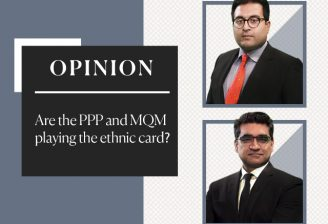

september 29, 2018 Samaa Web
Are the PPP and MQM intentionally playing the ethnic card? ‘Agenda 360’ hosts Haider Waheed and Abdul Moiz Jafferii explored this in their show.
The anchorpersons were referring to Thursday’s spat in the Sindh Assembly between lawmakers of the former allies.
MQM’s Muhammad Hussain had said that the PPP was responsible for the disintegration of Pakistan, the 1981 hijacking of a PIA aircraft and the 1990 Pacca Qilla operation in Hyderabad.
Agenda 360’ anchors Haider Waheed and Abdul Moiz Jaferii discussed the allegations about Buzdar and his political career. On Friday, Imran Khan nominated the politician for the slot of Punjab chief minister, saying that he is the ‘perfect candidate’ for the office.
Out of the 218 million children employed into the workforce worldwide, 62.1 million of the child labor takes place in Asia and Pacific, meaning that in prevalence, 1 in every 14 children is a victim of child labor in Asia and Pacific. The International Labor Organization coins the term “child labour” as work that deprives children of their childhood, their potential and their dignity, and that is harmful to physical and mental development.